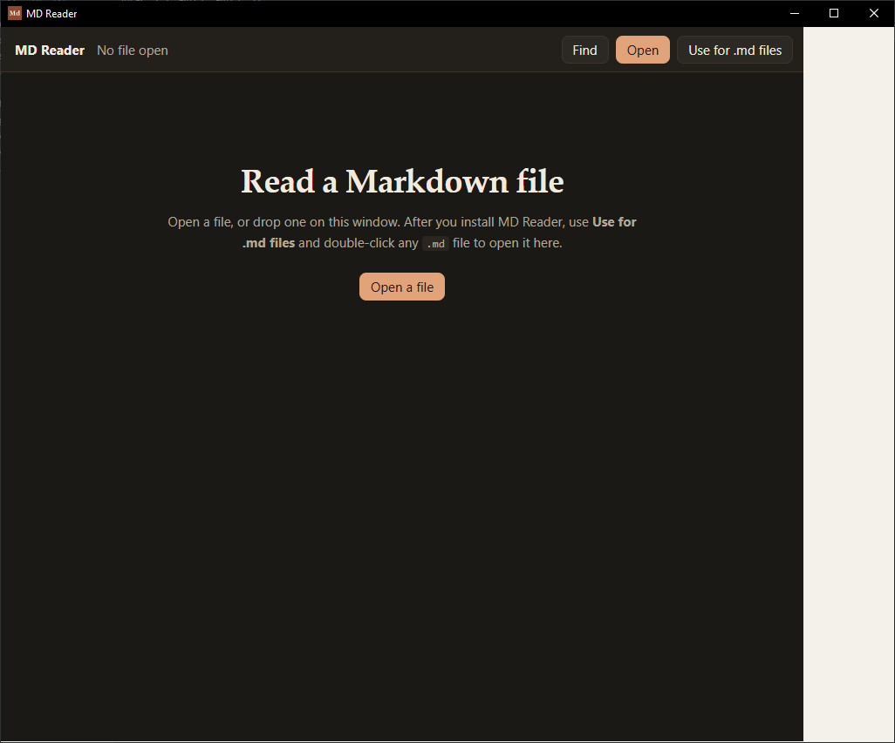
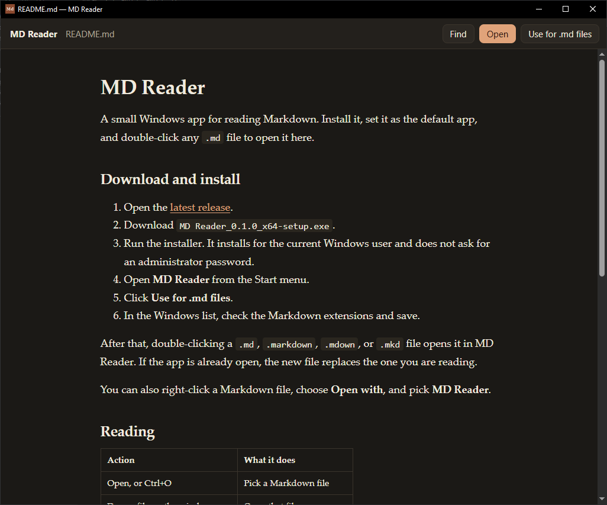

MD Reader
MD Reader is a free Windows app for reading Markdown files. Install it once, then double-click any .md file to open it here.
Download MD Reader for Windows
The download is MD.Reader_0.1.0_x64-setup.exe. It installs for your Windows account and does not ask for an administrator password.


Install it
- Click the download button above. The file goes to your Downloads folder. If the browser asks whether to keep it, choose Keep.
- Double-click
MD.Reader_0.1.0_x64-setup.exe. - If Windows says it protected your PC, click More info, then Run anyway.
- Follow the installer until it finishes.
- Open the Start menu, type MD Reader, and click the app.
Make it open .md files
- In MD Reader, click Use for .md files.
- Windows opens a list of file types.
- Check
.md. Also check.markdown,.mdown, and.mkdif those appear. - Click Save.
Double-click a Markdown file. It opens in MD Reader. If a file still opens in another program, right-click it, choose Open with, then Choose another app, and select MD Reader. On Windows 11, click Always. On Windows 10, check Always use this app to open .md files, then click OK.